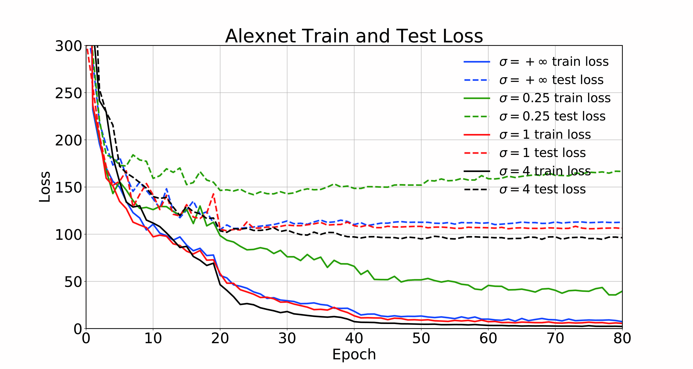
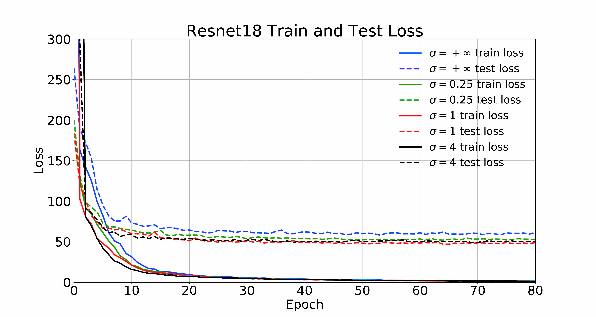

Radial Lens Distortion Correction by Adding a Weight Layer with Inverted Foveal Models to Convolutional Neural Networks
Abstract
Radial lens distortion often exists in images taken by commercial cameras, which does not satisfy the assumption of pinhole camera model. Eliminating the radial lens distortion of an image is necessary as a preprocessing step for many vision applications. Some paper has employed Convolutional Neural Networks (CNNs), to achieve radial distortion correction. They generated images with a large number of images of high variation of radial distortion, which can be well exploited by deep CNN with a high learning capacity, and reach the state-of-the-art results. In this paper, we claim that a weight layer with inverted foveal models can be added to these existing CNNs methods for radial distortion correction. In the widely used very deep Resnet-18 model, our method achieves about 20 percent decrease in the loss function with faster convergence compared to the previous methods.
Our system overview
We synthesize image datasets by generating radial lens distorted images simulated from real images in ImageNet. The synthetic datasets are input into our CNN added by an inverted foveal layers and train it to map its synthesized distortion coefficients. The learned framework is applied to estimate the distortion coefficients of real images.
Network structure
We add an inverted foveal weight layer in the end of convolution layer of Alexnet and Resnet-18, followed by fully connected layer. Feature maps output from the final convolutional layers are multiply by the inverted foveal weight layers.Qualitative Results
Loss curve of Alexnet and Resnet-18 can be seen in follows. 
Distortion correction results
[1st-Input distorted images, 2nd-Correct results using method proposed by Rong et al, 3nd-Correct results using our method]
Dataset
The Dataset of this paper can be found in BaiduPan.Publication
Radial Lens Distortion Correction by Adding a Weight Layer with Inverted Foveal Models to Convolutional Neural Networks.Yongjie Shi, Danfeng Zhang, Jingsi Wen, Xin Tong, Xianghua Ying. Hongbin Zha
International Conference on Pattern Recognition (ICPR 2018)
BibTeX
@inproceedings{yongjie_icpr2018,
title = {Radial Lens Distortion Correction by Adding a Weight Layer with Inverted Foveal
Models to Convolutional Neural Networks}
author = {Yongjie Shi, Danfeng Zhang, Jingsi Wen, Xin Tong, Xianghua Ying, Hongbin Zha},
booktitle = {International Conference on Pattern Recognition (ICPR)},
month = {August},
year = {2018}
}